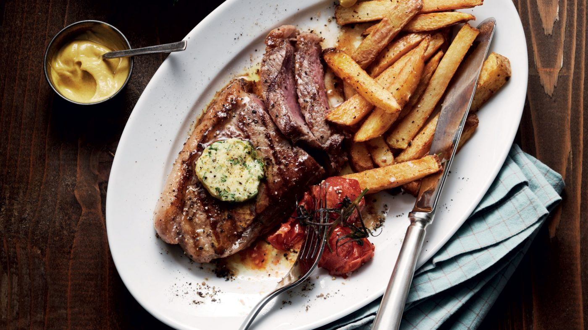

Steak and Chips

Description
Steak and Chips is a classic dish. Coupling the meatyness of the beef with the potatoey goodness of the chips
makes a winning combination. Add some herbs, garlic, butter and the right sauce and you are in food heaven.
Depending on how you like your steak (anyone who likes well-done can leave now) the cooking time of steak varies
greatly. An absolute delicious dish, paired with a glass of red wine is just *chef's kisses*. Bon apetit mon
ami!
Ingredients
- 600g medium-sized King Edward potatoes or Maris Piper potatoes
- Sunflower oil
- 2 x 200g/8oz beef steaks
- 2 handfuls mixed leaves dressing of your choice, to serve
For the butter
- 50g butter softened
- small handful parsley leaves, finely chopped
- 1 small garlic clove minced (optional)
- small squeeze lemon juice
Cooking Instructions
- First make the butter: mash all the ingredients together with lots of cracked black pepper. Pat the butter
flat between cling film (it’ll chill quicker when thinner) and put in the fridge or freezer to harden.
- Cut the potatoes into neat chips, rinse under hot water, then dry on a tea towel. Place the chips in a deep
saucepan (they should only come up a third of the way) and just cover with cold oil. Place the pan on a
medium heat, bring the oil to a simmer and give the chips a stir with a wooden spoon. Increase the heat so
the oil bubbles really quickly and fry the chips, stirring occasionally so they don’t stick, until crisp and
golden – the whole process will take 15-20 mins. When they are done, scoop out with a slotted spoon onto a
plate lined with kitchen paper and set aside.
- Meanwhile, heat the griddle pan until smoking hot. Season the steaks with salt and pepper and rub with a
little oil – how you cook your steak will depend on the cut you have chosen and its thickness. For a steak
that’s 2cm thick, cook it for 2 mins on each side for rare, adding 1 min more for every increasing degree of
doneness. Just before lifting the steaks off the griddle, place half the butter on top of each. Serve the
steaks with the chips, some mixed leaves and a tangy dressing.
Home